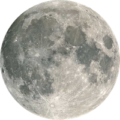
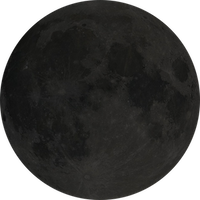
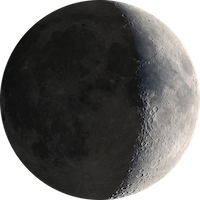
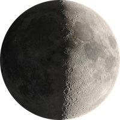
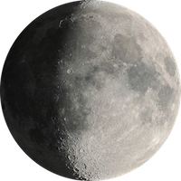
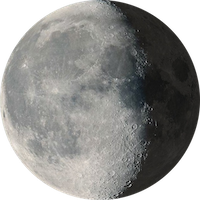
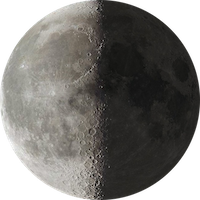
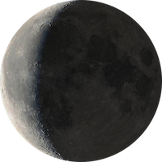

The full moon is the lunar phase when the
Moon appears fully illuminated from Earth's perspective. This occurs
when Earth is located between the Sun and the Moon (more exactly, when
the ecliptic longitudes of the Sun and Moon differ by 180°). This
means that the lunar hemisphere facing Earth – the near side – is
completely sunlit and appears as a circular disk. The full moon occurs
roughly once a month.The time interval between a full (or new) moon
and the next repetition of the same phase, a synodic month, averages
about 29.53 days. Therefore, in those lunar calendars in which each
month begins on the day of the new moon, the full moon falls on either
the 14th or 15th day of the lunar month. Because a calendar month
consists of a whole number of days, a month in a lunar calendar may be
either 29 or 30 days long.
Throughout the history of the Earth, the
Moon has been a major influence on the evolution of the land, ocean
and life. For Billions of years the Moon has been stirring the oceans
in its never ending orbit. Scientist believe life itself may not have
been possible without the Moon's tidal mixing of the oceans that
created the complex chemical compounds that were necessary for life to
begin. It makes sense that our lives today are influenced by the Moon
Phase, position and proximity to Earth. Whether it’s some deep
chemical reaction or more of a spiritual connection it’s easy to see
the influence.
Doctors and Nurses dread the Full Moon each
month when the emergency rooms are filled with people giving birth.
Ask a police officer and they will tell you there is a heightened
energy in the air on a Full Moon and New Moon. It’s on these days that
the craziest things happen in the world. The Moon is one of the most
powerful symbols in astrology. Some people are more in tune with their
Birth Moon Phase or Zodiac Moon Sign than the more common zodiac Sun
Sign. Like the Sun Sign, your Birthday Moon Phase and Moon Sign can
tell you a lot about yourself. The current Moon Phase today or the
Phase on your Current Birthday is also said to influence our
day-to-day lives. Explore the links below to see the diffences of
being born on the different Moon Phases.
{kind=link}
Moon Phase Personality Descriptions
Your astrological sign may cover the
positioning of the planets at the time of your birth, but it doesn’t
cover one of the most potent energy fields on Earth: the moon phase
you were born in. The “lunar personalities” are the 8 phases of the
moon cycle: New Moon, First Crescent, First Quarter, Waxing Gibbous,
Full Moon, Waning Gibbous, Last Quarter and Waning Crescent. They can
shed light on not only some of your qualities and tendencies, but more
importantly, the first energy you were exposed to on Earth, and how it
affects the way your path here will unfold.
The importance of the Moon and its phases
throughout history can be clearly seen by how prominently Moon phases
feature in the calculation of dates for major religious festivals.
Easter Sunday is always the first Sunday after the first Full Moon
after the March equinox. In 2008, the March equinox is March 20; there
is a Full Moon March 22; the Sunday after that is March 23. Easter
Sunday in 2008 is March 23. The Full Moon can occur anywhere up to a
month after the March Equinox; this is the reason the date of Easter
changes so much from one year to the next. Rosh Hashanah, the Jewish
“head of the year” or New Year festival “starts at sunset on the day
of the New Moon closest to the September Equinox”. Numerous other
religious festivals across a number of faiths (including Ramadan,
Hanukkah, Purim and both the Vietnamese and Chinese New Year) are
timed to either New or Full moons in certain astrological signs or in
relation to a specific equinox or solstice.
In modern astrological practice the Moon
phases are used to describe the pulse or tone of your birth chart and
your life. All other birth chart factors, like planetary placements
and aspects, are modified by the energy of your Moon phase. The
importance of Moon phases, long respected by ancient astrologers, was
reintroduced to the modern world through the early parts of the
twentieth century by the astrologer Dane Rudhyar. There are also links
between Moon phases and reincarnation, though these beliefs would have
evolved centuries earlier, out of eastern astrological philosophies,
where fate and karma have a larger part to play. Our obsession with
our Sun Sign or Star Sign is a reflection of society’s obsession with
the individual ego, the conscious mind and one’s creative output
(qualities of the Sun). Equally, you could say “I am a New Moon phase”
or “I am a Full Moon phase”; this description describing your
instinctive personality urges, from an emotional, unconscious and soul
perspective (moon qualities).
The Sun or Star sign is simply one of the
easiest astrological factors to generalise, making it easy to cater to
the general public via sun sign columns and the like. A few minutes
research or inquiry with an Astrologer would confirm for you what Moon
phase you were born under. Your Moon phase describes your personality
profile and reflects the basic pulse of your life. Your Sun sign is
subtly, but essentially different depending on which phase of the Moon
you were born under. The combination of Sun Sign and Moon phase
creates a holistic description of an individual as it caters to the
masculine/ yang (Sun) and feminine /yin (Moon) aspects of human
nature.
Where you born on a Full Moon?
Have you ever wondered what phase of the Moon you were born on? Where ypu born on a Full moon or New moon? Are more people born on a Full Moon or New Moon? Enter the date you were born on to find out the Moon Phase of your birthday. Also try a friend or family member’s Birthday and share the results with them.
Enter the date you were born on to find out your Moon Phase and Sign. Also try your birthday with the current year to get this years Moon Phase and Sign
New Moon

The New Moon represents a clean start, like a
new seed breaking the surface after a period in the darkness. It
heralds a time when there is a movement towards the future and has a
particular sort of sensitivity. Imagine this tentative seed – it may
survive, it may be at the mercy of the elements. This is reflected in
the nature of the individual born at that time. It signifies vitality
and the urge to survive but also a certain vulnerability. New Moon
people tend to experience the world in a very subjective manner. There
is always a personal approach to their attitude on life and there is
little confusion in their outer and inner expression when both
Luminaries are in the same sign. Their awareness or consciousness of
self is easily reflected into the world, and the world can seem to
present many challenges. This person meets those challenges in an
attempt to grow and survive. A keyword might be ‘enthusiasm’. The Yin
signs,( for the same sign New Moon) will tend towards subjectivity and
inner growth while the Yang signs tend towards worldly achievement.
The person is optimistic, trusting, and is almost incapable of seeing
negativity in life, so great is his eagerness to experience himself
and his life. He is born with an innately positive outlook and carries
it through despite setbacks, bouncing back from difficulties to rise
again to the challenge.
This first phase consists of the urge to
experience life, to grow and initiate, gather momentum and can
envisage or imagine fulfillment. Following on from the ‘Dark Phase’,
which, symbolically, is one of incubation and fertility, the
personality is no longer embryonic but filled with vitality but also
with a certain sensitivity and fragility as it ‘breaks out’ into the
world. These people seem to know that they must survive the best they
can and the person has a psychic awareness that it must meet many
challenges. They are markedly independent and meets those challenges
as part of their life expectations. Often, though, the person takes on
far more than he should – he forgets that he is ‘new’ and therefore
‘naïve’ and will tend to rush headlong into life, trusting to luck. He
often finds it! The New Moon personality shines with eagerness. One
might expect an impulsive nature, depending on the sign, and even the
introverted signs will still have a keen interest in life and its
challenges. The person might be particularly emotional and responsive
to others but by nature is innately self-involved. He investigates
life as though the world is a new land to be explored and great
discoveries are to be made to which he can append his name. Because of
his subjective nature there could be some impatience regarding the
place or needs of others and a tendency to ‘ride roughshod’ in the
urge to make inroads in life. This is not deliberate but simple
enthusiasm running away on its own energy.
New Moon people are ‘self starters’ – they
take up challenges and even create them for themselves. They are goal
oriented often without any particular end in view, but simply because
they enjoy tackling new things. So they are starters but not always
finishers! They need the discipline of time – just as the new seed
must be given time to thrive and grow, so often early life is littered
with challenges and projects gone wrong, or unfinished. Later in life
these people become very productive as their progressed cycle
coincides with the cycle of Saturn and they will experience a
Progressed Lunation around the same time as Saturn returns to its
birth position.
Source:
astrologyclub.org
{kind=link}
Waxing Crescent

The Crescent personality has an innate sense
of the positives and negatives and so is no less keen but more
cautious, weighing things up before taking the initiative. But he can
lack clarity because of this and there is often both eagerness and
resistance, an urge to both move forward and at the same time stay
comfortable in the safety zone of what is familiar. There is some
insecurity embedded in this person, a tentative approach, yet a
curiosity and need to explore life which is very strong and
motivating. The metaphorical seed we saw emerge from the dark earth
now has its first leaves and has survived the first storms and danger,
allegorically committing the perils to memory, if plants could be
imagined to have memories! The psyche does! The keywords here might be
‘anticipation and hesitation’.
These people seem aware that there are
challenges and tensions to be overcome. For this reason, people born
at this phase can have a problem defining goals and direction in life,
‘in case things go wrong’. But once having established some direction,
they will make a clean break and move ahead full steam! Then they
surprise everyone with the thrust and purpose after first appearing
tentative. We see this in those who break with tradition, with
parental expectation, and often with the country of birth! They trust
implicitly in their own capacity for survival and have a naiveté and
thrust that is quite charming, much less ‘gung-ho’ than their New Moon
cousins but no less enthusiastic. These people seem sometimes to have
a ‘burr under the saddle’ – they are somewhat driven in their need to
achieve in life. Depending on the Yin and Yang of the signs involved
in the Crescent personality, they will tend to be a little variable,
but once a decision is made will move forward.
This phase includes the quintile and sextile
aspects, both of which are practical ‘working’ and ‘creative’ so the
personality cannot remain static but forges ahead with goals in view,
completing them, even though they may lose interest along the way. In
anticipation of a long journey ahead, in order to achieve future
growth, the personality phase is akin to a child leaving home for the
big world of adulthood. Often in order to be successful he needs to
make a permanent break. This is not always physical, but a break with
the morality, educational bias, traditions and habits. Familiarity
makes it hard to leave security, but by his nature he is driven to do
so. They may at times appear to hover on the brink of decision-making
and action, and need encouragement to explore but rarely do they
become stuck for too long!
They often maintain a youthful demeanour and
even when old, might exhibit a candour and innocence that is extremely
charming. Advancing, without needing to justify their actions, or
becoming overwhelmed by fear of progress, is a challenge that this
personality must meet head on if they are to get the best out of life.
They often seem to need to explain or seek ‘permission’ to act
assertively, yet have a strength that is quite surprising when they
let it show! They often need time to assimilate and assess challenge,
to determine direction and may appear to vacillate. They live in
anticipation, learn through experience so that as they mature, they
become bolder and more assertive. They are born with enormous
potential but need time to activate it. They will rise to the
challenge, only to retreat when blocked. Often the ability to retreat
is useful because they re-gather their resources and come out fighting
after ‘regrouping’.
Source:
astrologyclub.org
{kind=link}
First Quarter

Personalities born at this phase will
maintain a similar ‘style’ of expression – the urge for growth through
change and simply go about it a different way. How they go about
achieving change will depend to a large extent on the sign involvement
because at the square, archetypal ‘issues’ can be highly challenging.
For example the Sun in Aries and the Moon in Cancer might experience
tension about autonomy and family patterning. The Sun in Cancer and
the Moon in Libra might experience tension between family and
intimacy. The Sun in Libra and the Moon in Capricorn might be born
expecting to experience dilemmas involving intimacy and status. With
the square, change is achieved forceful and deliberate and willful. So
this personality is entrenched with the desire for growth but tends to
do so at the expense of inner peace – aware of relationship dilemmas
and might unconsciously force issues in order to break free of what he
perceives to be limiting factors.
The phase embodies ambition but sometimes at
a cost. The metaphorical seed has not only broken the surface but is
developing its leaves and reaching for the sunshine – but it is
exposed to the wind and rain, frost and heat, and so experiences a
critical phase – will it live, will it die – does it have to complete
for its place in the sun with others of its kind? This personality
might even experience a form of rejection by family, or least feel
that he doesn’t ‘fit’ and this can be emotionally difficult to handle,
yet it leaves him free to explore his own world and crisis in one form
or another can be the catalysis for this. The tension that is inherent
within the personality is often reflected in the tensions within the
parental relationship, which is often seen by the person as an
inharmonious one. So he often has to deal with feelings of ‘taking
sides’ – not only with parental relationships but also in other
relationships in life.
He may find himself in situations where he
has to make choices between opposing forces. He may become independent
at an early age. His internal dilemma is most often that achievement
comes at the expense of emotions and full expression of emotion leaves
him feeling that he has lost control. This is a ‘bridge’ between
conscious Sun and unconscious Moon, where objectivity and subjectivity
clash so that the personality can express in unpredictable and
reactive behavioural patterns. Action, instinct, crisis, reaction, the
setting of purposeful goals, the building of framework and forward
momentum, independence of thought and action can create a ruthlessness
about this personality that is strongly rooted in parental
conditioning and the risk that he carries and fulfilsthe parental
‘issues’.
As the person comes to terms with his own
drives an enormous sense of purpose and clarity of direction is
established. Thus we find the potential high achiever. This is a
personality that has a sense of self but has to struggle to adapt to
the society in which it lives. Some of the struggles and crisis this
personality experiences is in finding a niche in life. Since this
phase incorporates the opening or waxing trine, and we can assume that
better understanding comes at the trine, or at least, better
acceptance and less stress, the person born later in the phase deals
with issues more calmly and resolutely, healing more quickly and
accepting of those things he cannot change. Thus, it may be easier to
deal with stress for those born at the trine. Sun and the Moon are in
the same element family so the energy flows easily and there is an
intensification of self-development. The paradox in this entire phase
is that while one experiences crisis and stress in the desire for
change, another will makes his transitions with ease. But the desire
and urge is no less intense. With the trine, there is acceptance of
conflict and easier handling of challenges.
Source:
astrologyclub.org
{kind=link}
Waxing Gibbous

This personality is fully aware of his
potentials and keen to understand and develop them. He does not seek
to do so in a crisis ridden way but is more patient and accumulative.
He acquires skills and understands the need for deliberation in
achieving in life. He is blessed with an intuitive faculty that is not
impulsive, but balanced between personal subjective goals and
awareness of how other might help him achieve them. It is less driven
than the phases that have gone before. The person is keenly aware of
social norms and expectations, takes what is of value to him and
easily rejects the rest. He does so with an intuitive understanding
that by accumulating material, knowledge and information he will gain
later life. He is more a ‘gatherer’ than a hunter is with a direct
approach, a progressive and optimistic outlook and a willingness the
use whatever skills and material comes to hand to achieve.
The tale of the plant is now fully into
survival – this phase is an accumulative stage and one in which our
plant begins to show its potential – is it a petunia or is it an apple
tree? It knows, and begins to take on its future form – feeding and
growing at a rapid rate – its roots are firmly in the ground from
where it draws its sustenance. So it is with the gibbous personality.
They know who they are and have firm idea of what they want! He is
aware that adjustments have to be made between personal desires and
the needs of others and so is generally able to compromise. However,
in doing so, he does not lose sight of his personal direction, but is
clear on what he wants within the framework of his culture, society
and its demands, and the political norms and creative opportunities
presented to him. . He has the most developed ability to be consistent
and persevere. So he may appear placid, but is resilient well grounded
and resolute. He may not be entirely willing to compromise his own
desires but if it suits his long term purpose will see the politics of
appearing to do so. He can be truculent if he can see no advantage. He
is clear on who he is and what he wants.
This phase brings objectivity as the
predominant attitude and the person is less dependent on instincts for
survival and more on ‘playing’ the system to find the means. He is
capable of and does, plan ahead and arrange for his own survival. Part
of the life pattern for this personality, especially when young is to
discover that life has a ‘pecking order.’ He is determined on his own
growth and so might tend to ‘usurp’ those who stand in his way.
However, he learns intuitively to avoid those who would threaten him
and to cultivate those who will enable him to find his own niche. We
might say this personality has all the makings of a political animal –
in touch with society and other people yet still able to use that
framework to further his own goals. He has a strong sense of identity
but often relies on other people to reflect the sense of ‘I’. Feedback
from others is very important and needs to be confirmed in childhood.
If aspects to the luminaries are encouraging, this person is able to
put himself across in an affable and sociable way. If not, he can be
beset with a desire to grow that pays scant attention to the lawful
means by which he can obtain his needs. He is able to write the rules
to suit himself. He has a capacity to analyse future directions and
past indiscretions and get them firmly in perspective, so he learns by
his mistakes.
This is he who ‘marches to a different drum’
at times but is well aware that he is doing so and can use it to
further his aims! The urge to reform and improve is strong. Thus we
find the person out in the world, extroverted rather than introverted,
not tentative but forward seeking, gathering and accumulating all that
might come in useful further down the track! The person is often a
store of knowledge and experience ranging from trivia to profound
understanding.
Source:
astrologyclub.org
{kind=link}
Full Moon
The Moon is at its ‘largest’ about to begin
its waning stage. Relationships with others and with the world at
large loom largely in this person’s life experience. They are born in
anticipation that to be who they are, largely depends on other people
in their lives so there is a paradox in balancing the ‘me’ with the
‘you’. They are capable of alternating between riding rough-shod over
the needs of others, or of being so aware of the others needs that
they neglect their own. What has happened to our tree? It now stands
tall and exposed. It dares the wind to blow it over, the sun to burn
it, water to flood it – and when these things happen it survives
because it has the strength to withstand the elements. It purpose now
is not so much self preservation as preservation of its species, and
so it sets fruit and seeds – and the first seeds are immature and need
time to develop. Some will some won’t. Those that are fertile stay,
those that are not fall to the ground.
So there is a sense of life and death,
fertility and barrenness that. reflected in the personality, can pull
in one direction or the other. Polarisation occurs so often this
personality seems pulled in two directions. They can act in a manner
that is best described as ‘extremist’. Balance and constancy requires
a constant shift in perspectives on life and the person has to find a
way to stay on the ‘middle road’. This creates many extremes in their
lives. Because the Sun and the Moon are opposite each other there is
no obstacle to illumination and the person is innately aware of both
his ego and his ‘soul’ and torn between the needs of each. The
constant pull between objective world experience and subjective inner
experience is at worst tormenting and at best a permanent dilemma for
Full Moon personalities. One moment they find themselves secure and
sure of their personal material or intellectual direction and the next
they are plunged into emotional and relationships turmoil.
The two poles are clearly separate. Ideally
this promises the well rounded, mature personality, capable of innate
sense of the profane and sacred parts of himself but the mere dynamic
of the opposition means he is in a constant state of flux – walking an
elemental tightrope. Rarely will the balance occur for the
satisfaction of the person. This is the ‘full on’ personality. Like
its New Moon partner, it is highly motivated but has the ‘follow
through’ to achieve, so is often impatient to ‘end’ and get on to the
next goal. Highly creative, obviously expressive, capable of being
self destructive, with hair trigger emotions, these personalities are
seen, want to be seen, are driven to seek approval from others in one
way or another, and this desire for approval is projected into the
world of relationships. Following the Gibbous phase where feedback is
a necessary resource for growth, for the Full Moon personality, such
confirmation is a commodity that has to come in a constant stream as
self-esteem can swing to extremes.
He can be supremely confident in his approach
to life, only to swing into periods of self-doubt. So his life
patterns tend to leap from one extreme to another. He is his own best
friend or worst enemy, and will project this into relationships so if
you are loved by or love a Full Moon do not expect this to be an easy
ride, because the lines between love and hate are thin! Motivation is
high, yet can be pulled back by emotional forces. Social norms and
primitive instincts vie for attention and the person is often torn
between the need to conform to the requirements of relationships and
social life and the inner urge for freedom and anarchy! There is a
keen sense of purpose and the need to express life ‘full on’. Maturity
enables the person to fulfil the innate promise of personal
self-development together with world achievement. He becomes able to
use it to advantage, so often the volatile child turns into the high
achiever in later years, but before doing so,will go through
tumultuous experiences that teach him some hard lessons about
co-operation.
Source:
astrologyclub.org
Waning Gibbous

This is a phase of distribution,
communication and illumination. The Disseminating Moon person has an
inborn need to spread the word – to announce his presence and even
boast of his prowess! He is well able to publicise ideas and is
strongly motivated at a social level. Social structures and society at
large benefits from this personality, and he benefits from it, but he
is in danger of becoming swamped by his own enthusiasms. He is vested
with a desire to instigate social reform, but at times needs to stop
and take into consideration that the world may not be ready for him!
He is a visionary and his vision of the future leaves no room for
limiting structures and traditions. He pushes the boundaries, and like
his Gibbous cousin, can do so in an almost amoral way, but does so
less for personal gain and more for the ’cause’.
They may embody the motto – the End justifies
the Means! The tree now has fruit and seeds in abundance. It scatters
the seeds that are ripe with a dancing abandonment for it’s purpose is
well defined. It revels in the elements for it is in tune with them
and realises their purpose. This is a joyous time of shedding those
seeds that will ensure its life is meaningful and its species will
survive! Dissemination means to scatter far and wide and our tree uses
nature to do this. Such people are involved in communication, often
teach, have concerns with the law, and structural norms of society and
are extroverted by nature. They express themselves with ease around
the trine, but can later experience difficulties as the closing square
is approached, so his greatest lesson is not to take his talents for
granted but to re-focus them in a collective way. His is the
personality with social leadership potential, able to convey the needs
of the group, to act in protecting, altering the thinking and
attitudes of the collective. He can be somewhat dictatorial and
demanding in being ‘always right’. He is born with an innate sense
that all things change and are impermanent and on the move. He has a
visionary bent and clarity of focus but also a sense of ‘timing’ and
seems to need to ‘get a piece of life’ while the going is good!
Those concepts that personally concern the
individual are those that he uses to benefit the whole. So we find
someone oriented towards causes, in helping professions, where his
innate ability to communicate is expressed. This is the position of
informing and educating those with whom there is contact. He is
altruistic, but can have a garrulous and socially seeking edge. He may
appear to act on impulse, but rarely does. His challenge is in
prioritising for he can scatter his energies and spread himself
thinly. He wants to be all things for all people. As children these
types are ‘old heads on young shoulders’. As teachers,lawgivers, and
information disseminators they mature early. This personality can
motivate others towards reform and they are often the spokesmen for
society. Immobility and unquestioning acceptance, resting on one’s
laurels is anathema for this personality. Life will seem pointless
unless they have the means to broadcast, share and experiment and
explore. For this reason, the person may engender belief systems
simply for the sake of action. The need is for caution and for
determining which facets of life have real significance rather than
for him to become involved in trivial or mundane activities just for
excitement.
Source:
astrologyclub.org
{kind=link}
Last Quarter

Those born at this phase are confronted with
many tensions between personal ideologies and beliefs and the
realities of systems and facts. He is the spokesman for the collective
but also risks biting off more than he can chew. His challenge is to
determine how much of himself he is prepared to sacrifice for the
collective demands. This collective can range from his immediate
family – often parents and the wider family hierarchy, to the ‘tribal’
structure of the community. He is torn between traditional values and
futuristic trends. He can see the values in both and so often is
caught in a dilemma of conscience. He keenly feels the urgings of
groups and those with whom he associates and needs to fit with the
structural norms and also incorporate his own ideals within those of
the group. Thus, at a positive level he can achieve personal ambitions
through the group, or change the group to suit his ends!
Either way he is tied to the moral fibre of
others. Here are the philosophers of the world, who do not necessarily
act to make reform happen, but push others into doing so, from a more
‘managerial’ stance. Such personality types require recognition from
the ‘system’ and often work and live within strict boundaries and
their dichotomy is that they wish that things were different. They
often ask, ‘why am I here’, ‘what is my purpose in life’ So he can
‘fit in’ to a business world by day and an esoteric world by night! He
is indeed more comfortable by night, if truth were told! What of the
tree? Its fruiting over, its seeds scattered there is time of rest in
preparation for dormancy.
The elements have scarred the branches, some
branches are not fruitful, and so the tree is pruned by life. Withered
branches fall as the wind races through them. The tree stands at the
mercy again of the elements, not in the same way as it did at the
opening square, but in a more mature way, as dead leaves begin to fall
and all that is useless in preparation for the next season, is
removed. Human intervention in the form of life, may even shape it so
that it conforms to and stands in the same image as others of its
kind. Negatively, the person can be overcome by inertia or paralysed
by fear of loss. He can be inflexible and so will experience loss as
he has a natural tendency to set himself up for failure if he is not
willing to embody new attitudes and change his behavioural patterns.
He can swing between the secure and proven yet inwardly knows that he
must change, or he will be left behind in the ever increasing pace of
life. This person can tend to become pessimistic, if his philosophies
are thwarted, trapped within the systems of life, and obligations,
until he espouses philosophical awareness of the future.
Career and other affiliations often are
crisis ridden and often associations need to be abandoned, or refined
in some way. This person is born with a sense of vocation. It often
takes a long time to shake off the desire to conform in order to tap
into his ‘calling’. The parental marriage might have seen one parent
completely dominating or dictating to the other. Thus the person is
imbued with the need to suppress either his emotional inner self, or
gives sway to inner life and has difficulty living in the here and
now. This is a tense position and like its counterpart the first
square, leads to a personality under stress. Inner conflicts,
insecurities and struggles are often not articulated. Stress at an
inner level builds up and the risk of outbursts and reactionary and
revolutionary behaviour is at odds with the seemingly calm outer
appearance.
Source:
astrologyclub.org
{kind=link}
Waning Crescent

This is the phase of transition and
preparation for transformation. This personality experiences life in
the knowledge and anticipation of radical change, but knows
instinctively that this will only come after some sacrificial or
ritual death. Society and hierarchies, people with power sit uneasily
with them. Yet they do not rebel. They are the introverts who take
everything life dishes out deep into the psyche for analysis and
transformation. They are often hesitant to make long term commitment
in worldly activities as though prompted that ‘there just isn’t enough
time’ to waste. So they are best equipped to make commitment in less
achievement oriented fields and more in ‘backstage’ ways where, they
can question, query, hypothesise, postulate and investigate future
potentials.
They are the prophets, and the ‘sensitives’
with an intuitive understanding and clairvoyant view of the future.
They experience hard lessons in life by being forced to let go of,
discard and deal with loss at different levels both within and
without. Yet they are the best equipped to do so and move on, for they
have an inbuilt sense of the transformative impermanence of life,
relationships and their own selves. They are often involved in short
term projects, appear sociable, yet are keenly separate, not ever
feeling entirely comfortable with groups associations, yet driven to
join for the comfort that affiliation brings.
Their sense of ‘not belonging’ is keenly felt
so they seek others of like mind – those who live life at an internal
level and have a strong ‘persona’ which protects the real inner Self.
Solitude is common. The Balsamic Moon person has much to offer in
wisdom and experience if he can overcome his pessimism. There is an
untapped depth to their experience and understanding, fertility that
is futuristic and can be transformative if applied to the benefit of
others. Their beliefs and knowledge seem to come from a collective
source and the intuitive, even psychic function is strong. They lean
toward religious philosophy, although often denying it. They believe
in ‘luck’, both good and bad, destiny and Karma. Profound and
instinctive, they are equipped to experience the animal levels of
being as well as the highest level of abstracted elevation and so
combine psyche and soma.
They are often intuitive healers, their
bodies often sensitive to changes and they can be found in
institutions, caring for the needy, often at the risk of their own
health. Confidence levels are often outwardly low and they hesitate to
express their intuitive nature openly, so the depth of psychic
evolution is rarely discovered except when life thrusts them into dark
phases. The tree enters its period of dormancy, confident that in due
time and the right season, it will ‘rise again’. Now its leaves fall
and become the food for the future. It may look sad and dead in the
winter of its life, but deep in the earth, fertile growth occurs. It
seeds, shed earlier and beginning to warm and feed on the compost and
the tree simply waits [patiently for the seasons to roll. So it is
with the balsamic personality.
They have embedded knowledge that everything
occurs according to its season and are often content with that. The
Balsamic person often has to set aside his or her own subjective needs
in order to fully feel a sense of oneness with the collective. They
are ‘loners’. They may well be affable, willing workers, yet never are
completely at ease, in the world of challenge. They seek enlightenment
because of a well-developed sense of imperfection and potential for
spiritual renewal. Self is a temple ready to receive enlightenment.
and the search is an ongoing theme. Consequently they tread a
spiritual path and desire to gain wisdom from the most mundane of
tasks. They seek transformation through service to others and
sometimes martyrdom. They can often be seen to care for their health
with an almost obsessive drive to perfect it, then go through periods
of unprecedented neglect. They work in quiet ways, involved in
‘backroom’ research rather than upfront activation and while they have
much knowledge, and insight, rarely expose themselves to criticism, or
take risks with knowledge.
Source:
astrologyclub.org
{kind=link}